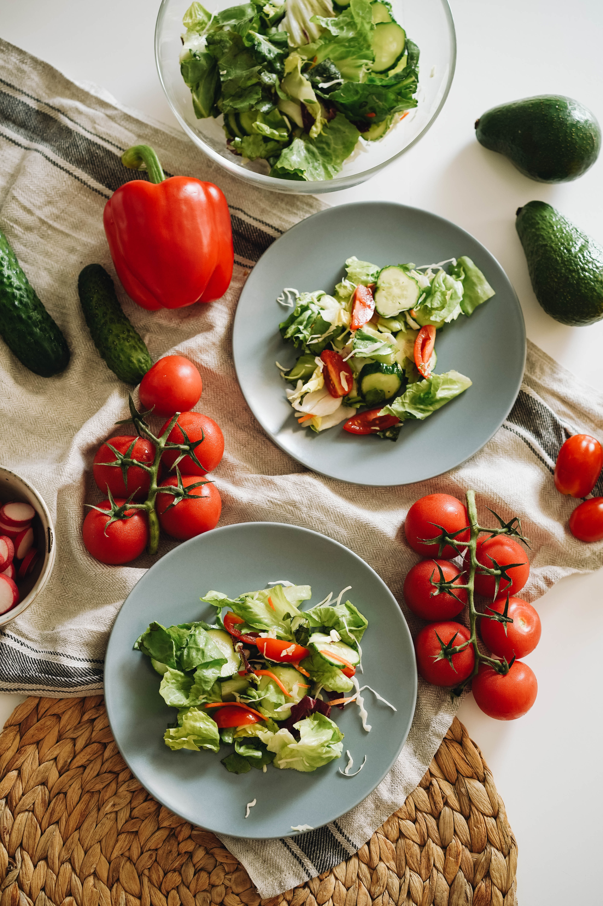
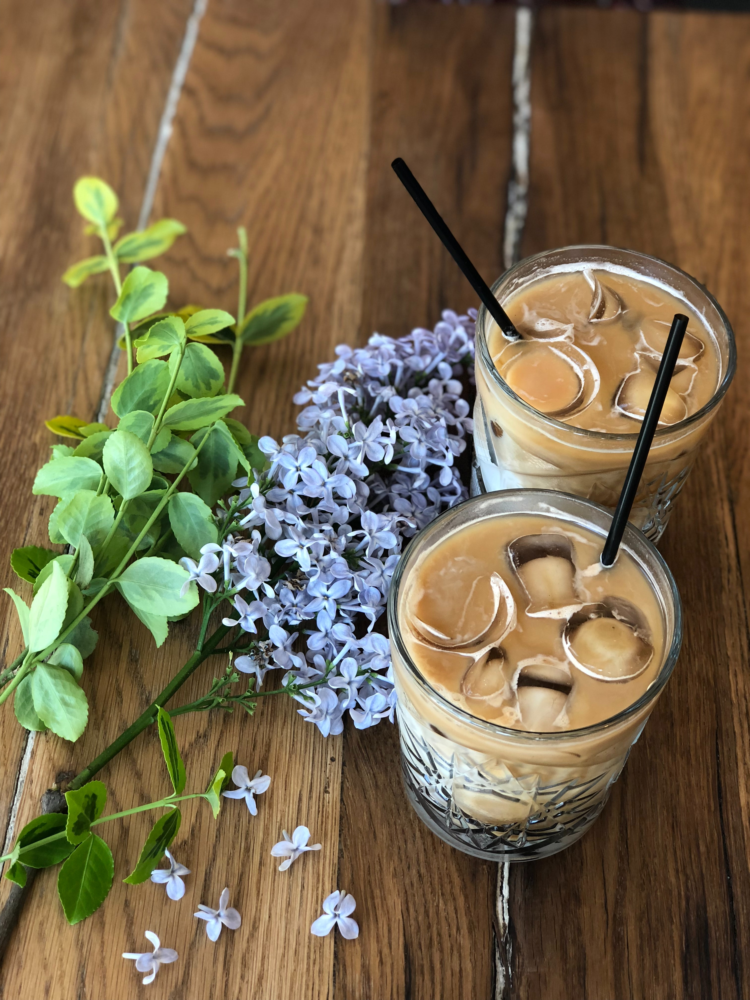
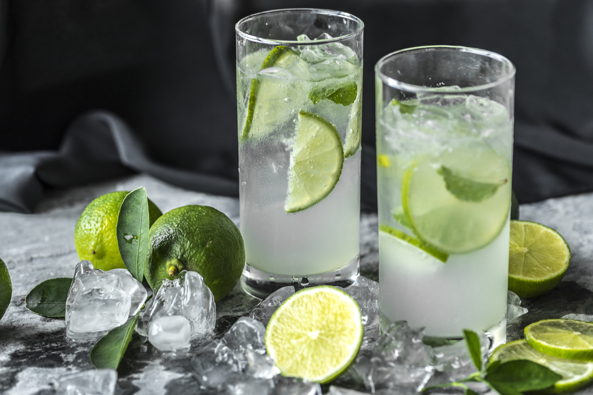
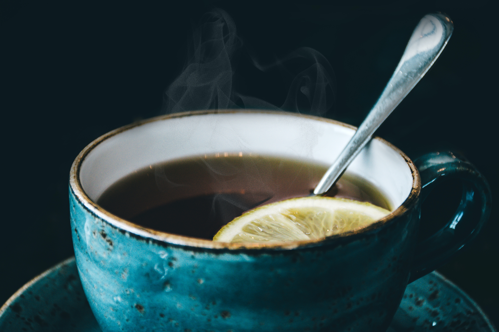

Wendy's Delicious
Keep it Easy with these healthy and delicious recipies
from make-ahead lunches and midday meals to fuss-free sides.

Salad
Salad is a delightful dish that combines an array of fish, crisp vegetables, often accompanied by a variety of dressing and toppings. Salad is a vibrant medley of fresh vegetables and flavourful dressings, offers a refreshing and healthy culinary experience. Weather it's a simple side dish or a hearty meal, salads delight the senses with their colors and tastes, making them a popular for people.

Coffee
Coffee is a beverage brewed from the roasted and ground seeds of the tropical evergreen coffee plant. Coffee is one of the three most popular beverages in the world (alongside water and tea), and it's one off the most profitable international commodities. Coffee comes both hot and cold variety. It contains chamical called Caffeine, a mild drug that keeps people awake.

Burger
Burgers are one of the most convenient and easiest foods to eat on the fly when we're in a hurry. We can have a burger at any time of day, whether it's breakfast, lunch, or supper, and maybe some fries and a Coke to go with it. Many restaurants are well-known for making their speciality burgers in a particular style. High quality beef medium to well with cheese and bacon on a multigrain bun." "A huge single or triple burger with all the fixings, cheese, lettuce, tomato, onions and special sauce or mayonnaise!

Doughnut
Doughnuts are usually deep fried from a flour dough, but other types of batters can also be used. Various toppings and flavors are used for different types, such as sugar, chocolate or maple glazing. Doughnuts may also include water, leavening, eggs, milk, sugar, oil, shortening, and natural or artificial flavors. A doughnut is a sweet snack made from fried dough. They are popular in many countries and can be homemade or purchased in bakeries, supermarkets, food stalls, and franchised specialty vendors.

Choose Your Happy Meal.
Have fresh food with excellent Service and
great recipies and selected food ingredients
which makes the dish delicious and healthy.
.jpg)
Pizza
Pizza is an Italian food that was created in Italy (The Naples area). It is made with different toppings. Some of the most common toppings are cheese, sausages, pepperoni, vegetables, tomatoes, spices and herbs and basil. These toppings are added over a piece of bread covered with sauce. Pizza toppings are also packed with a compound called glutamate, which can be found in the tomatoes, cheese, pepperoni and sausage. When glutamate hits our tongues, it tells our brains to get excited - and to crave more of it. This compound actually causes our mouths to water in anticipation of the next bite.

Juice
Juice is a liquid that comes from plants, animals or fruit. The juice from fruit is often made into a drink. Some fruits that are often made into drinks are apple, orange, tomato, pineapple, grapefruit, guava, mango, passionfruit, watermelon, cranberry, grape, lemon and lime, but there are many others. Juice is a liquid that comes from plants, animals, or fruit. It can be made from the extraction or pressing of the natural liquid contained in fruit and vegetables.

Noodles
Noodles are typically made from unleavened wheat dough and are stretched, extruded, or rolled, and then cut into varying shapes. Noodles account for approximately 20% - 50% of the total wheat consumed in Asia, and its popularity has extended to many countries outside of Asia Noodles are a type of food made from unleavened dough that is rolled flat and cut, stretched, or extruded into long strips or strings. They are prominent in European and Asian cuisine.

Veg Food
A vegetarian diet or a diet very low in meat has proven good effects on human health. It takes work to put together a healthy vegetarian diet that has everything the human body needs. When people decide to become vegetarian, they usually think carefully about what they eat and choose healthy food. A vegetarian diet is one that does not include any meat or seafood. However, there are many variations to this some people following a vegetarian diet may eat eggs and dairy foods, while others may avoid one or both.
Wendy's ~ Where Delicious meets delightful
Savor the flavour of Delicious Delights.

Non-Veg Food
Non-veg food, also known as non-vegetarian or carnivorous cuisine, offers a diverse and flavorful world of culinary experiences. From succulent steaks to tender chicken, and from fresh seafood to juicy burgers, non-veg dishes tantalize the taste buds with their rich textures and savory flavors. Prepared with a variety of seasonings and cooking methods, non-veg cuisine showcases the artistry of culinary traditions from around the globe.

Pasta
Pasta is a beloved Italian staple, made from durum wheat semolina, water, and sometimes eggs. Its versatility makes it a favorite worldwide, whether in the form of spaghetti, penne, or lasagna. Pasta can be paired with an array of sauces, from rich tomato marinara to creamy Alfredo, catering to various tastes and preferences. The shapes and sizes of pasta are as diverse as the Italian regions they come from. Spaghetti, for instance, is popular in southern Italy, while northern regions favor hearty gnocchi and filled ravioli.

Tea
Tea, a beverage with a history stretching back thousands of years, is an integral part of various cultures around the world. It all began in ancient China, where legend has it that Emperor Shen Nong discovered tea when tea leaves blew into a pot of boiling water he was preparing. Since then, tea has evolved into a diverse array of flavors and preparations. Tea is often classified into several main categories, including black, green, white, oolong, and herbal teas.

Soup
Soup, a timeless and versatile dish, has been a staple of human cuisine for centuries. It has evolved across cultures, each region creating its unique interpretations and variations. The beauty of soup lies in its simplicity. It typically involves simmering a combination of ingredients in liquid to create a flavorful and comforting meal. The ingredients used in soup can range from vegetables, meats, and seafood to legumes and grains, making it a hearty and nourishing option.

Follow Us
Copyright © All Rights Reserved.